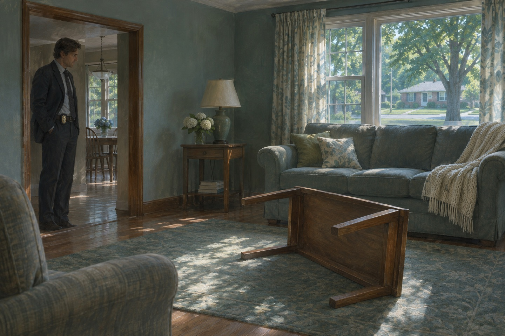
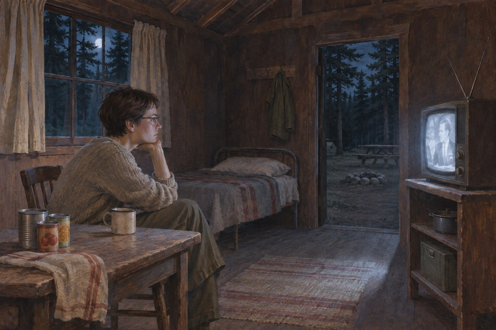
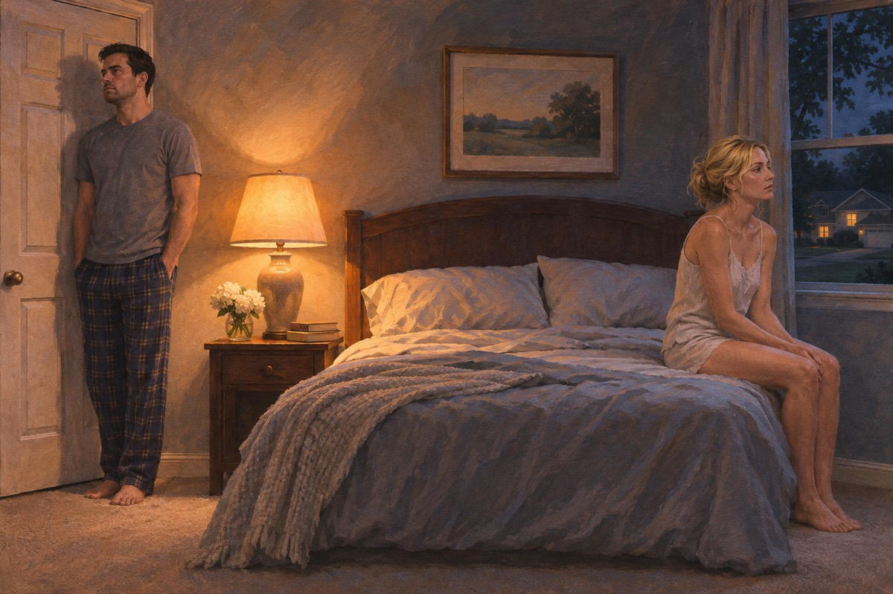

两个写字的人
尼克在一家杂志写稿，艾米写心理测试题。他们在一个派对上认识，聊了十分钟，发现彼此都在假装比别人聪明。艾米说：我最讨厌那种以为自己很聪明的男人。尼克说：那我完了。她笑了。三个月后他们住在一起。尼克后来回忆，那天晚上她说了一句话：我这个人，一旦决定了，就不会回头。他记得她那天穿一件灰毛衣，头发扎起来，说话的时候会看着你的眼睛，看得太久。他后来跟玛戈说：我遇到一个很聪明的女人。玛戈说：聪明的女人很麻烦。他说：我不怕麻烦。他说这句话的时候，还不知道麻烦是什么意思。
神奇的艾米
艾米是童书《神奇的艾米》的原型，那套书是她父母写的，卖了上百万册。书里的艾米聪明、勇敢、永远做对的事。现实里的艾米从小到大都在被问：你怎么不像书里那样。她说：因为书里那个不是我。她说这话的时候在笑，眼睛没有笑。她母亲玛丽贝丝和父亲兰德都是心理医生，一起写了那套书。书里的艾米会解决所有问题，现实里的艾米只会解决自己。高中时她跟一个叫汤米·奥哈拉的男孩交往过，分手以后他搬去了另一个州，很多年不敢提她的名字。
婚礼
婚礼在一个小岛上办，来了六十个人。艾米穿一件旧婚纱，是她祖母的。尼克在致辞里说：我这个人不完美，但我会一直诚实。台下鼓掌。艾米后来在她的日记里写：那一刻我知道，他在撒谎。他连自己都不诚实。岛上那天风很大，艾米的头纱一直飞。尼克念完誓词，看见她在笑，笑得很标准。他后来想，一个人可以把一场婚礼办得像一场演出，而他直到三年后才看出观众席上只有他一个人。
出处 · 第一部 尼克
搬回去
金融危机，两个人的工作都没了。尼克的母亲病重，他说我们回去吧。艾米说好。他们从纽约搬回密苏里一个小镇，用艾米剩下的钱开了一家酒吧。艾米在日记里写：我成了一个我不认识的人。她写这句话的时候，用的是铅笔。艾米把纽约的房子卖了，把钱投进酒吧。她说：这是我们的新生活。她开始学做当地的菜，学着跟邻居打招呼，学着在超市里笑。她在日记里写：我每天都在演一个叫艾米的女人。她把这一页撕下来，烧了。
一杯啤酒
酒吧叫「邓恩家」，尼克和妹妹玛戈一起开。他每天十点到，站在吧台后面，跟所有人说话。玛戈说：你在这儿比在纽约开心。他说：因为在这儿没人问我写过什么。她说：也因为这儿有个二十二岁的学生。他愣住了，说：你怎么知道。她说：我是你妹妹。玛戈说：你跟她说过话吗。尼克说：谁。她说：那个学生。他说：没有。她说：那你为什么每次她来，你都要多擦一遍杯子。他没有回答。那天晚上他回家，艾米坐在沙发上看书，抬头说：你身上有香水味。他说：酒吧里人多。
五周年
那天是他们结婚五周年。尼克早上出门，艾米在厨房煮咖啡，说：你今天早点回来。他说好。他去了酒吧，跟玛戈抱怨了一通婚姻。中午他接到邻居电话：你家的门开着，猫在外面。他回家，客厅的茶几翻在地上，地上有血。艾米不见了。那天早上艾米煮了咖啡，还煎了蛋。她说：晚上我有个惊喜。他说：我也有。他出门的时候她在门口站着，看着他走。他后来回想，那个眼神不像告别，像在确认一件事：他终于走了。
出处 · 第一部 七月五日
现场
警察来了，拍照、取样。厨房的地上有碎玻璃，壁炉里烧过东西，灰里有纸的残片。血被擦过，又用漂白剂洗过——像是有人想让人看见，又不想让人看清。朗达蹲在壁炉前，说：这个血不是擦掉的，是抹开的。吉尔平说：那就是有人在这儿打过一架。客厅的茶几翻在地上，地毯上有一摊血，被拖过。厨房的柜子全开着，像被人翻过。可电视还在，首饰还在，抽屉里的现金还在。朗达说：抢东西的人不会只拿一样。吉尔平说：也许他慌了。她说：慌的人不会记得擦血。

记者会
警局开记者会，尼克站在台上，请公众帮忙找妻子。他说：艾米，如果你在看，回家吧。台下有人问：你昨晚在哪。他说：在家。他说这句话的时候笑了一下——那是因为紧张。第二天所有报纸都用了那张笑脸。标题是：妻子失踪，丈夫在笑。记者问：你们最后一次说话是什么时候。尼克说：早上。记者问：说了什么。他说：她说晚上有惊喜。台下有人笑。他没有听见。他后来在电视上看见自己那个笑容，愣了很久，说：我当时在想别的事。玛戈说：全国不这么想。
日记
警察在客厅的壁炉后面找到一本日记，是艾米的笔迹。前面几年写得很甜，后面越来越怕。最后一页写着：他今天又发脾气了，我怕他有一天会杀了我。朗达把日记读完，合上，看着尼克，说：你太太怕你。尼克说：她写的不是真的。朗达说：那你告诉我什么是真的。日记是从 2005 年写到 2012 年，一年比一年薄。前面写他怎么逗她笑，后面写他怎么摔门。最后一页的日期是失踪前一天，上面写着：如果有一天我死了，请去找我丈夫。朗达把本子合上，说：这本东西，像写给别人看的。
搜索队
镇上来了三百个志愿者，穿黄T恤，在田野和河边排成队。尼克站在队伍前面讲话，说谢谢大家。有人喊：邓恩先生，你太太平时穿什么鞋。他说：我不记得了。人群安静了一下。那天晚上，玛戈在厨房里问他：你真的不记得。他说：我记得，我只是不能说。那天晚上尼克一个人去了河边。他站在水边，想那根高尔夫球杆——他确实买了，也确实扔进了河里，因为他不想让艾米知道他花了那笔钱。他站在那儿，忽然听见身后有脚步声。是玛戈。她说：你在这儿干什么。他说：我在想怎么解释。
一件一件
警察查出三件事：尼克用艾米的钱买了一支高尔夫球杆；他在艾米失踪那天下午去过河边；他跟一个叫安迪的学生有不正当关系。朗达把这些摆在桌上，说：你还有什么没告诉我。尼克说：没有了。她说：邓恩先生，你每次说谎之前，都会先笑一下。朗达说：你四月买了一根球杆，五月你太太失踪，六月你把球杆扔了。尼克说：那是我自己的钱。她说：那是你太太的钱。他说：我们的钱。她说：你们分账。他忽然发现，这个女人比他想的仔细得多。他笑了。她说：你又笑了。
妹妹
尼克半夜去找玛戈，把一切都说了：他不爱艾米了，他有外遇，他想过离婚，但他没有杀她。玛戈听完，说：那本日记呢。他说：不是我写的。她说：可那是她的字。他说：我知道。她说：那你就完了。她说这话的时候在哭。玛戈说：你为什么不早说。他说：因为说了就成真的了。她说：什么成真的。他说：我不爱她这件事。玛戈坐在楼梯上，抱着膝盖，说：哥，你完蛋了。他说：我知道。她说：那你还坐着。他说：因为我不知道该往哪走。
另一个名字
艾米没有死。她剪短了头发，染成深色，买了一副眼镜，在驾照上写自己叫南希。她在一个偏远的营地里租了一间小屋，屋里有一台电视、一张床、一箱罐头。她每天看新闻，看丈夫在电视上求她回家。她一边看一边吃薯片，笑得很轻。她在那间小屋里住了三个星期，每天只看两样东西：新闻和她自己的脸。她把头发剪得很短，照镜子的时候会练习表情——惊恐的、无辜的、崩溃的。她练得很好。她给自己取名叫南希，因为她觉得这个名字听起来像个好人。
出处 · 第二部 艾米

被抢
两个住在隔壁的年轻人——杰夫和格蕾塔——看出她带着现金。他们闯进她的屋子，抢走了她的钱和车。她坐在被翻乱的地板上，第一次觉得害怕。她算过每一步，没有算到这一种人：不聪明，也不怕。她给他们钱，说：你们走吧。他们走的时候，把她最后一罐可乐也拿走了。她跑去找杰夫要钱，杰夫说：你有的是钱。她说：我可以报警。他说：你报警，警察就会问你为什么一个人住在这儿。她愣住了。她第一次发现，自己编的故事，别人也能拿来用。她把最后一枚戒指给了他。
一个旧号码
她给一个十年前的男人打了电话。德西·科林斯，有钱，痴情，至今未婚。她说：德西，我遇到麻烦了，你能来接我吗。他在电话那头沉默了三秒，说：你在哪。她说了一个地址。挂了电话，她对着玻璃理了理头发。她知道他一定会来。德西接电话的时候背景里有电视的声音。她说：我在一个加油站，身上没有钱。他说：你别动，我四个小时到。她说：你不问我为什么。他说：我等你这句话等了十年。她挂了电话，站在便利店的灯下，脸上没有一点表情。
德西的家
德西的别墅在湖边，很安静，四周是树林。他给她煮了汤，说：我这些年一直在等你。她说：我知道。他说：你丈夫打你了吗。她低下头，说：他不让我出门。他说：你安全了。她抬起头看他，眼睛里有眼泪。她算好这一刻已经很久了。别墅里有壁炉、有钢琴、有一整面墙的书。他给她铺了床，说：你睡主卧，我睡客厅。她说：德西，你人真好。他说：我不是好人，我只是没办法不管你。她低下头，把脸埋在手里，肩膀在抖。她从指缝里看见他在看她，眼神很软。
那把刀
她在德西的厨房里找到一把刀，藏在自己枕头下面。她给德西写了一封信，写得很温柔，说谢谢他救了她。然后她躺在床上，等他进来。他进来的时候她叫了一声他的名字。他弯下腰。她把刀送进了他的喉咙。她后来说，那是她这辈子做过的最干净的一件事。她后来在日记里写：我杀他的时候，他看着我，眼睛里没有恨，只有不明白。她说：我最受不了那种眼神。她把现场布置成一个绑架犯的屋子，把手腕上勒出痕迹，把头发弄乱，然后光着脚走出去，走进九月的光里。
回来了
一个浑身是血的女人走进小镇的医院，说：我叫艾米·邓恩，我被绑架了。护士愣了三秒，然后整栋楼都动了起来。电视直播、警察、记者，全挤在走廊上。尼克赶到的时候，她躺在床上，看见他，伸出手，说：你来了。他握住那只手，觉得冰凉。医生给她检查，说：你有脱水的迹象，身上有多处擦伤。她点点头，说：他把我关在一个房间里。她说这句话的时候声音很小。护士在旁边听着，眼睛红了。尼克站在门口，看见她抬起眼，朝他看过来，那一眼很稳。
故事
她对着警察讲了三个小时：德西怎么跟踪她、怎么把她关起来、怎么强奸她、她怎么逃出来、怎么反抗。每一个细节都对得上——因为她提前想过。朗达在门口听着，说：这个故事太完整了。吉尔平说：完整有什么不好。她说：真话不会这么完整。朗达问她：你为什么不早点跑。她说：他锁着门。朗达说：可你说他白天去上班。她说：他有时候回来。朗达说：哪一天。她说：我记不清了。朗达把笔放下，说：邓恩太太，你记得清每一件事，除了这一件。她抬起头，说：你什么意思。
英雄
媒体一夜之间转了向。昨天尼克是杀妻嫌疑犯，今天他是守候妻子的好丈夫。艾米成了全国的勇士。出版社来找她，电视节目请她，她的父母站在她身边，说：我们一直相信她。只有玛戈在厨房里对尼克说：她杀了人。尼克说：我知道。她说：那你打算怎么办。他说：我不知道。玛丽贝丝在电视上说：我的女儿从小就很坚强。兰德站在她旁边，一句话没说。尼克在厨房里看着屏幕，玛戈在旁边说：他们卖书卖了一辈子，现在卖女儿。尼克说：别这么说。她说：我说错了么。他没有回答，把电视关了。
关上的门
那天夜里，艾米坐在床上，对尼克说：我知道你在想什么。他说：你知道就好。她说：你想揭发我。他说：我没有证据。她说：你不需要证据，你只需要一个愿意相信你的人。他说：那你为什么要回来。她说：因为我怀孕了。艾米说：你恨我，是因为你恨自己。他说：别来这套。她说：那你为什么不去报警。他说：因为没人会信。她说：对，因为你是那个在电视上笑的人。她把被子拉上来，说：睡吧，明天还要接受采访。他坐在床沿，一夜没躺下。

冷冻的精子
孩子是用尼克存在诊所的精子做的。她算好时间，算好手续，算好他会怎么反应。她说：你可以走，但你要想清楚，你走了以后，这个孩子会跟着谁。尼克看着她，忽然明白，他从头到尾没有赢过一次。他说：你疯了。她说：也许。可我要这个孩子。她说：诊所的电话号码我存了三年，就等这一天。尼克说：你早就想好了。她说：我从结婚第一年就想好了。他说：那你为什么不走。她说：因为走了就输了。她说这句话的时候，把手放在肚子上，像在护着什么东西。
律师的话
律师坦纳说：你要是揭发她，第一，你没有证据；第二，全国都会恨你；第三，孩子生下来就没有母亲。他说：你现在唯一的出路，是当一个好丈夫。尼克说：那我这辈子就完了。坦纳说：你早就完了，现在只是选一种完法。坦纳说：我办过十七个杀妻案，十一个有罪。他说：你不是最坏的那个，你只是最倒霉的那个。尼克说：那我该怎么办。坦纳说：回家，给她煮咖啡，陪她上节目，等孩子生下来。他说：然后呢。坦纳说：然后你这辈子就这么过。
采访
他们一起上了一档电视节目，坐在同一张沙发上，手牵着手。主持人问：你们是怎么挺过来的。艾米说：因为我们相爱。尼克说：因为她是我妻子。他说这句话的时候看着镜头，笑得很好看。节目播出后，他们的婚姻被评为「年度最坚强」。主持人问：你们有什么想对观众说的。艾米说：婚姻不容易，但只要两个人都愿意，就能走下去。尼克在旁边点头。台下的女观众在擦眼泪。录完节目，两人在后台分开走，各自上了一辆车。司机问尼克：回家吗。他说：回。
一句真话
夜里，尼克躺在妻子旁边，看着天花板。他想起第一天认识她的时候，她说：我这个人，一旦决定了，就不会回头。他忽然想问一个问题，问了三年也没问出口。他侧过身，说：艾米，你到底有没有爱过我。她闭着眼睛，过了很久，说：有过。然后她翻过身去，睡了。她说有过的时候，声音很轻，像在说别人的事。尼克躺着没动，听见她的呼吸慢慢变长。他想，这个人连一句真话都要算好怎么说。他又想，也许那句「有过」是真的。他宁愿相信是真的。他闭上眼，天已经亮了。
冷的
他一个人走到客厅，坐在沙发上。窗外在下雪，屋子里很暖。他想起那本日记，想起那个笑，想起德西家湖边的别墅。他知道自己在跟一个什么人过日子。他也知道，明天早上，他还是会给她煮咖啡，还是会说早安。他坐了很久，然后回房间去了。他给猫添了食，给自己倒了一杯威士忌，没有喝。他想起德西，那个到死都不明白自己为什么会死的男人。他忽然觉得，自己和德西只差一件事：德西死在了她手里，他活着。他把杯子放下，回到卧室，躺在她旁边，闭上眼睛。